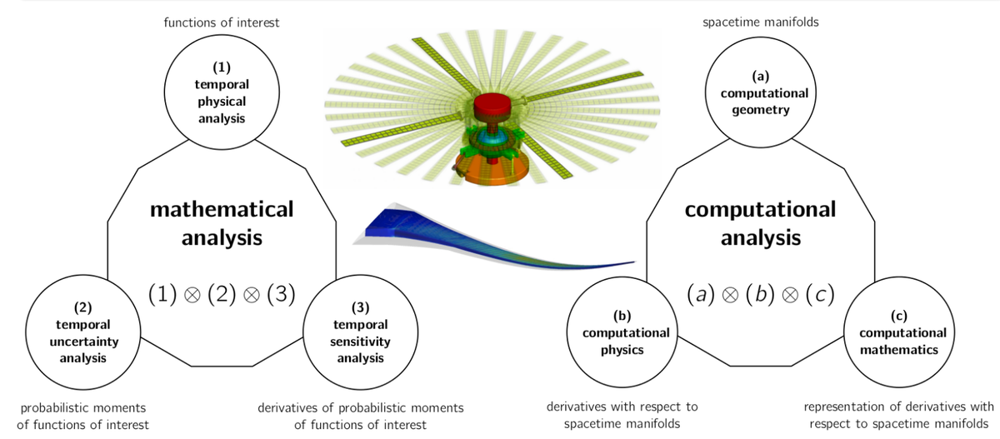
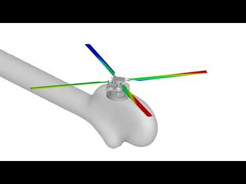
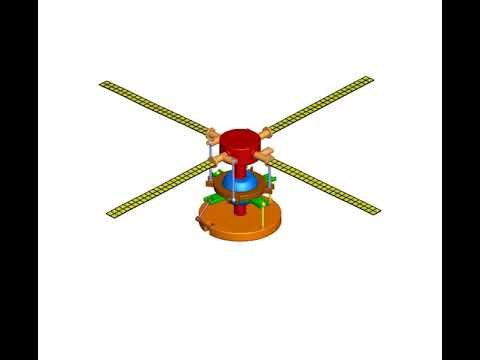
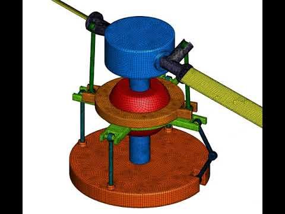
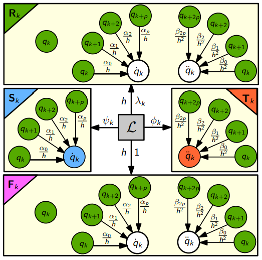
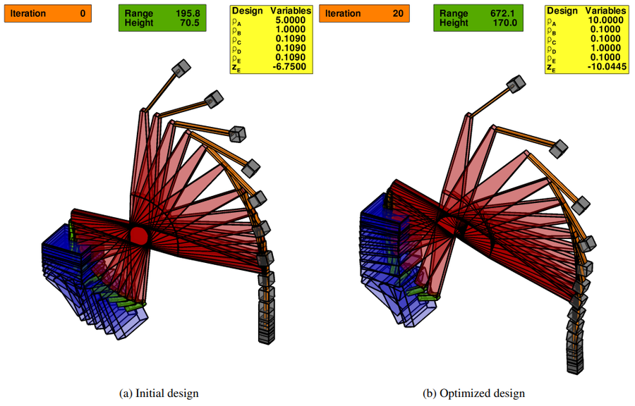
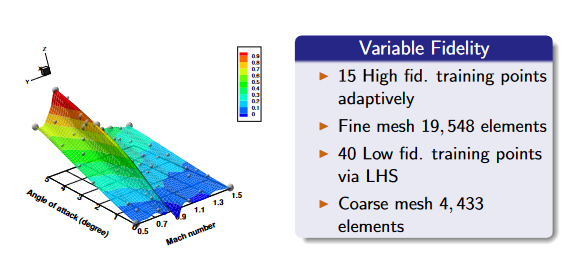

Research
Computational sciences for aerospace design optimization under uncertainty
My research in abstraction is the examination of philosophical aspects of existing mathematical techniques to alleviate the limitations of computational analysis methods and synthesize new methods with advance capabilities such as accuracy, adaptability, modularity, scalability, and robustness.

First focus
Computational infrastructure
The creational aspects of optimization under uncertainty infrastructure for aerospace design, composed of three key elements.
High-fidelity physics
A framework predicting the distribution of physical quantities on spatio-temporal manifolds.
Sensitivity analysis
A framework providing higher-order derivative information to augment optimization and linear-nonlinear solution methods.
Uncertainty quantification
A framework providing statistics and confidence intervals.
The mechanics of interactions among these infrastructure elements is a key challenge. It is a critical piece of technology required for Multidisciplinary Optimization Under Uncertainty efforts such as NASA CFD Vision 2030.
How the three elements meet in optimization under uncertainty →
Point at a milestone, a demonstration or a decision gate to read it.
Second focus
Infrastructure applications
Targeted aerospace applications that demonstrate the benefits of the infrastructure in deterministic, robust and reliability optimizations.


Simulations
Rotorcraft in motion
Opens on YouTube.



Papers
The applications in print

Semi-Intrusive Stochastic Galerkin Finite Element Method for Adjoint-Based Optimization Under Uncertainty
Journal of Aerospace Information Systems ; Volume 21; Number 9; Year 2024

Semi-Intrusive Uncertainty Propagation and Adjoint Sensitivity Analysis Using the Stochastic Galerkin Method
22nd AIAA Non-Deterministic Approaches Conference, Orlando, Florida, Jan 2020

Parallel Finite Element Framework for Rotorcraft Multibody Dynamics and Adjoint Sensitivities
AIAA Journal ; Volume 57; Number 8; 2019; Special Issue on Sensitivity Analysis for Rotorcraft Optimization

Adjoint-based derivative evaluation methods for flexible multibody systems with rotorcraft applications
55th AIAA Aerospace Sciences Meeting, Grapevine, Texas, Jan 2017; Special Session on Sensitivity Analysis of High-Fidelity Rotorcraft Computations

A Scalable Adjoint Method for Coupled Flexible Multibody Dynamics
57th AIAA/ASCE/AHS/ASC Structures, Structural Dynamics, and Materials Conference, San Diego, California, Jan 2016

Unified Framework for Training Point Selection and Error Estimation for Surrogate Models
AIAA Journal ; Volume 53; Number 1; 2015

Robust Optimization of a Wing Under Structural and Material Uncertainties
17th AIAA Non-Deterministic Approaches Conference, Kissimmee, Florida, Jan 2015

Robust Optimizations of Structural and Aerodynamic Designs
15th AIAA/ISSMO Multidisciplinary Analysis and Optimization Conference, Atlanta, Georgia, June 2014

Building Aerodynamic Databases Using Enhanced Kriging Surrogate Models
AIAA Region III Student Conference, Chicago, Illinois, April 2013

A Multivariate Interpolation and Regression Enhanced Kriging Surrogate Model
21st AIAA Computational Fluid Dynamics Conference, San Diego, California, June 2013